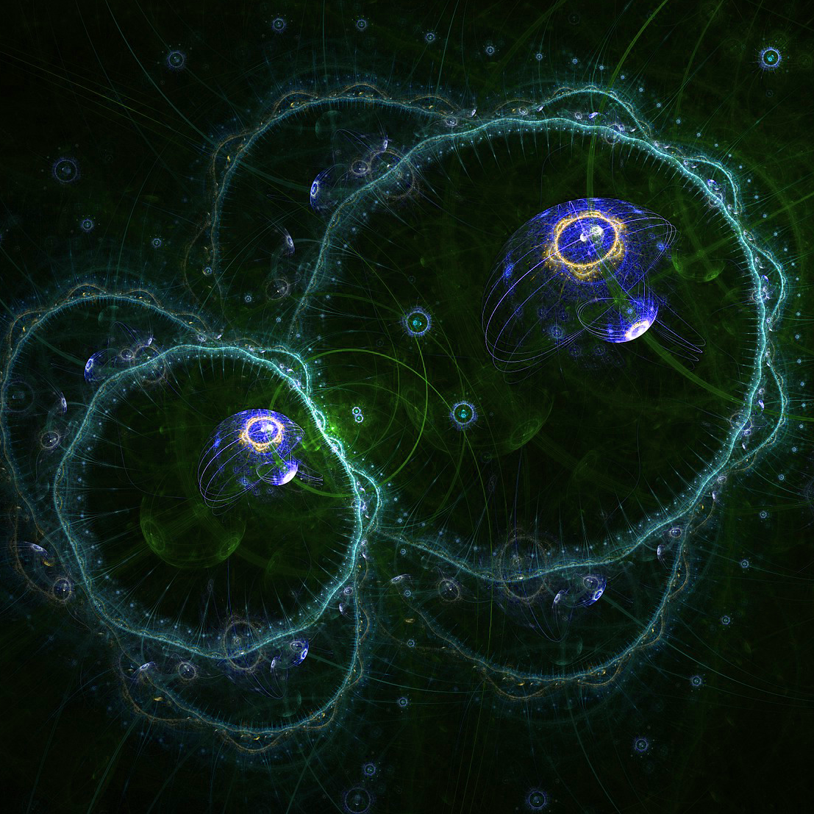

We are a group of students from Wroclaw University of Science and Technology who
are passionate about theoretical and experimental physics. We aim to promote knowledge
about current researches among students.
As a student scientific association we organize regular meetings in the form of
lectures or overviews, workshops and occasional visits to various research facilities. To find out
more about current events check 'news'.
We collaborate with ... type other student associations.
Supervisors:
Prof. dr hab. Katarzyna Sznajd-Weron, Department of Theoretical Physics
Prof. dr hab. Antoni Mituś, Department of Theoretical Physics